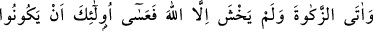
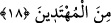

olmadığına delalet etmektedir. Bu konuda bir kâfirin vasiyyeti de olsa vasiyyeti kabul
olunmaz. Hanefilerin ortak görüşü budur. Mescidlere girmelerine de mâni olunur. Şayet
bir müslümandan izin almadan girecek olurlarsa ta’zir cezasını hak eder. İzin alarak
girmişlerse bir şey lazım gelmez. Fakat evlâ olan mescidlere karşı tâzimli olup kâfirleri
oraya sokmamaktır.
18. Allah’ın mescidlerini ancak Allah’a ve ahiret gününe inanan, namazı dosdoğru
kılan, zekatı veren ve Allah’tan başka kimseden korkmayanlar imar ederler. İşte
onların doğru yolu bulanlardan olacakları umulur.
“Allah’ın mescidlerini” Mescid-i Haram’ı ve diğerlerini “ancak Allah’a ve âhiret
gününe” o günde olacak öldükten sonra dirilme, hesâp ve cezâya “inanan…”
Peygambere îman Allah’a imana dâhildir. Kelime-i şehadet, ezan ve kamette olduğu gibi
Allah’a imanla berâber zikredildiği ve ikisinin birbirinden ayrılmadığı mâlumdur.
“Namazı” cemaatle “dosdoğru kılan…”
Ulemânın (Meşayıhın) çoğunluğu namazın cemaatle kılınmasının vâcib olduğunu
söyler. Bir hadiste şöyle buyurulmuştur: “Kişinin cemaatle kıldığı namaz, evinde ya da
dükkanında kıldığı namazdan yirmi beş kat daha faziletlidir.”[104] buyurulmuştur.
Teravih namazını cemaatle kılmak da daha fazîletlidir. Cemaatle kılınan bütün
namazların mescidde kılınması da efdaldir. Evde cemaatle namaz kılanların sevabı
camide cemaatle kılanların sevâbından daha azdır.
Farz olan “zekatı” gönül hoşluğu ile “veren…”
Zekat namazın hemen yanında zikredilmiştir. Çünkü, biri olmadan diğeri kabul
olunmaz.
“Ve” dini konularda “Allah’tan başka kimseden korkmayanlar” Allah yolunda hiçbir
kınayanın kınamasını ve hiçbir zâlimin korkusunu dikkate almadan O’nun emir ve
yasaklarının gereğini yerine getirenler… Savaş ve benzeri durumlarda korkmamak da
bu hükme dâhildir.
Fıtri olarak karanlıktan, yırtıcı hayvanlardan, tehlikeli büyük hastalıklardan korkmak
Allah korkusuna zarar vermez. Çünkü Allah korkusu, Allah’ın azametini, ilminin
kuşatıcılığını, cezâ ve mükâfât vermedeki güç ve kudretinin büyüklüğünü düşünmekten
doğan irâdî bir korkudur. Fıtrî korku da ise kasıt ve irâde yoktur.
“imar ederler.” Yâni, bütün bu ilmî ve amelî kemâlâtı kendisinde toplayan
kimselerin, Mescid-i Haram’ı ve diğer mescidleri imar etmesi doğru olur.
“İşte onların doğru yolu bulanlardan” arzu ettikleri cennete ve orada bulunan nice